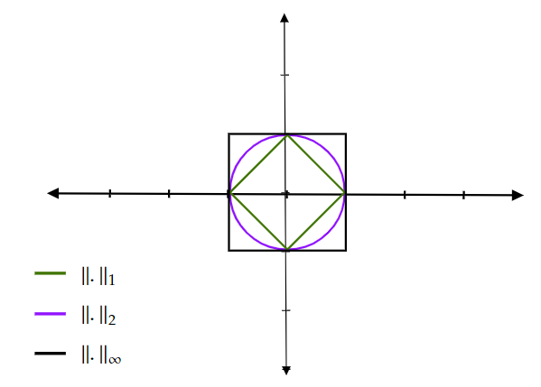

Espaces vectoriels normés - Espaces métriques¶
Les espaces vectoriels seront des \(K\)-espaces vectoriels ou le corps \(K\) est égal à \(\mathbb R\) ou \(\mathbb C\).
Distances et Norme¶
Soit \(X\) un ensemble et \( d : X \times X \to \mathbb R^+\) une application
Définition (distance et espace métrique)
On dit que \(d\) est une distance sur \(X\) si :
i) \(d(x,y) = 0\) si, et seulement si, \(x=y\) (séparation));
ii) \(\forall x, y \in X, d(x,y) = d(y,x)\) (symétrie);
iii) \(\forall x,y, z \in X, d(x,y) \leq d(x,y) + d(y,z)\) (inégalité triangulaire)
L’ensemble \(E\) muni de cette distance est appelé espace métrique.
Si \(Y \subset X\) est un sous-ensemble de \(X\), alors la restriction de \(d\) à \(Y\) est une distance. Donc \(Y\) muni de cette restriction est bel et bien un espace métrique. On parlera alors de métrique induite sur \(Y\).
Exemples
1- Soit \(X\) un ensemble non vide. On peut définir la distance suivante :
2- Sur \(\mathbb R\), on dispose de la distance usuelle suivante :
3- Soit \(C[a, b]\) l’ensemble de toutes les fonctions continues sur \([a, b]\) (\(a, b \in \mathbb R\) et \(a<b\)). Alors
est une distance sur \(C[a, b]\).
4- Une autre distance sur \(C[a, b]\) est l’application suivante:
Définition (Norme et espace vectoriel normé)
Soit \(E\) un \(K\)-espace vectoriel. Une application \(\mathcal N : E \to \mathbb R^+\) est dite une norme sur \(E\) si les propriétés suivantes sont vérifiées :
(i) \(\mathcal N(x) = 0\) si et seulement si \(x=0\) (séparation);
(ii) \(\forall x \in E\) et \(\forall \lambda \in \mathbb K, \mathcal N(\lambda x) = |\lambda| \mathcal N(x)\) (Homogénéité);
(iii) \(\forall x, y \in E, N(x+y) \leq \mathcal N(x) + \mathcal N(y)\) (inégalité triangulaire).
On dit alors que \((E, \mathcal N)\) est un espace vectoriel normé.
Soit \((E, \mathcal N)\) un espace vectoriel normé, Si \(X=E\), on peut définir la distance suivante:
On dit que \(d\) est la distance associée à la norme \(\mathcal N\).
Exemples
1- Sur \(\mathbb K^N\), on peut définir les normes suivantes :
Pour démontrer que \(\|.\|_2\) vérifie l’inégalité triangulaire, on utilise l’inégalité de Cauchy-Schwarz :
Proposition
Si \(\mathcal N\) est une norme sur un espace vectoriel réel ou complexe \(E\), alors \(\mathcal N\) est une fonction convexe sur \(E\).
Démonstration
Soient \(0\leq \lambda \leq 1\) et \(x, y \in E\).
Nous avons \(\|(1-\lambda)x+ \lambda y\| \leq \|(1-\lambda)x\|+ \|\lambda y\| = (1-\lambda)\|x\|+ \lambda \| y\|\)
Définition (Boule ouverte, boule fermée et sphère)
Soit \((X,d)\) un espace métrique. Pour tout \(x\in X\) et pour tout \(r>0\), on note :
la boule ouverte de centre \(x\in X\) et de rayon \(r>0\).
la boule fermée de centre \(x\in X\) et de rayon \(r>0\).
la sphère de centre \(x\in X\) et de rayon \(r>0\).
On remarque que \(B(x,r) \subset B_f(x,r)\) et \(S(x,r) \subset B_f(x,r)\). De plus, \(B(x,r)\cup S(x,r) = B_f(x,r)\).
Exemples
1- La boule ouverte \(B(x, r)\) sur \((\mathbb R, d_e)\) est l’intervalle ouvert \(]x-r, x+r[\).
2- La boule ouverte \(B(x, r)\) sur \((\mathbb R^2, d_e)\) est le disque ouvert de centre \(x\) et de rayon \(r\).
3- Soit \((X, d)\) un espace métrique avec
Alors pour tout \(x\in X\), une boule ouverte de centre \(x\) et de rayon \(r\) est
Dans un même espace, la courbe des boules (ouvertes ou fermées) change, de manière considérable, en fonction de la distance choisie. Par exemple, dans \(\mathbb R^2\), les distances associées aux normes suivantes :
Voici les courbes des boules ouvertes associées à chaque distance (norme)
{kind=link}
Corollaire
Les boules d’un espace vectoriel normé sont convexes.
Définition
Une partie \(A\) d’un espace métrique \((X, d)\) est dite bornée s’elle est incluse dans une boule ,
Une partie \(A\) d’un espace metrique \((E, \mathcal N)\) est dite bornée s’il existe \(M\geq 0\) tel que pour tout \(x\in A, \|x\|\leq M\) ,
Définition
Soit \(E\) un espace vectoriel. On dit que deux normes \(\mathcal N_1\) et \(\mathcal N_2\) définies sur \(E\) sont équivalentes s’il existe deux constantes \(C_1, C_2 >0\) telles que :
Proposition
Deux normes \(\mathcal N_1\) et \(\mathcal N_2\) sont appelées normes équivalentes s’il existe deux constantes \(a, b>0\) telles que, pour tout \(x \in E\)
Théorème (Produits d’espaces métriques)
Soient \((X_1, d_1),\ldots, (X_k,d_k)\) des espaces métriques. Pour \(x = (x_1,\ldots, x_n) \in X_1\times X_2 \times \ldots \times X_n\), on pose \(d(x,y) = max \{d_i(x_i,y_i), 1 \leq i \leq k\}\). Alors, \(d\) est une distance sur \(X_1\times X_2 \times \ldots \times X_n\).
Théorème (Produits d’espaces vectoriels normés)
Soient \((E_1, \mathcal N_1),\ldots, (E_k,\mathcal N_k)\) des K-espaces vectoriels normés. Pour \(x = (x_1,\ldots, x_n) \in E_1\times E_2 \times \ldots \times E_n\), on pose \(\mathcal N(x) = max \{\mathcal N_i(x_i), 1 \leq i \leq k\}\). Alors, \(\mathcal N\) est une norme sur \(E_1\times E_2 \times \ldots \times E_n\).
Topologie des espaces métriques¶
Définition (ouvert)
Soit \((X, d)\) un espace métrique. On dit qu’un sous-ensemble \(U\) de \(X\) est un ouvert de \((X, d)\) si, pour tout \(x\) de \(U\), il existe \(r > 0\) tel que \(B(x,r)\), la boule ouverte centrée en \(x\) et de rayon \(r\), est incluse dans \(U\). On appelle topologie associée à la métrique \(d\) et l’on note \(\mathcal T_d\), l’ensemble des ouverts de \((X, d)\).
Exemples
On vérifie que les ensembles \(\emptyset\) et \(X\) sont toujours des ouverts de \((X, d)\).
Soit \(x \in X\) et \(r>0\). Alors \(B(x,r)\), la boule ouverte de centre \(x\) et de rayon \(r\) est un ouvert de \((X, d)\).
Les ouverts d’un espace métrique vérifient les deux propriétés suivantes :
Proposition
1- Une intersection finie d’ouverts est un ouvert.
2- Une réunion quelconque d’ouverts est ouvert.
Démonstration
1-
Soient \(U_1, \ldots, U_n\) des ouverts de \((X, d)\) et \(V =\cap_{i=1}^n U_i\). Montrons que \(V\) est un ouvert.
Soit \(x \in V\), donc \(\forall i \in \{1, \ldots, n\}, x \in U_i\).
Puisque chaque \(U_i\) est un ouvert donc pour tout \(i \in \{1, \ldots, n\}\) il existe \(r_i>0\) tel que \(B(x, r_i) \subset U_i\).
Soit \(r=min\{r_1, \ldots, r_n\}\).
Nous avons pour tout \(i \in \{1, \ldots, n\} B(x, r) \subset B(x, r_i) \subset U_i \) Donc \(B(x, r) \subset V =\cap_{i=1}^n U_i\).
2- Soit \(I\) un ensemble quelconque.
Soient \((U_\alpha)_{\alpha \in I}\) une famille d’ouverts de \((X, d)\) et \(V =\cup_{i=1}^n U_i\).
Soit \(x \in V\), donc il existe \(\alpha \in I\) tel \(x\in U_\alpha\). Puisque \(U_\alpha\) est un ouvert donc il existe \(r>0, B(x, r) \subset U_\alpha \subset V\).
Le mot finie est important lorsqu’on parle de l’intersections d’ouvert. En effet, pour tout \(n \in \mathbb N\) les intervalles \(]\dfrac{-1}{n}, \dfrac{1}{n}[\) sont des ouvert dans \((\mathbb R, d_e)\) mais \(\cap_{i=1}^n ]\dfrac{-1}{n}, \dfrac{1}{n}[ =\{0\}\) n’est pas un ouvert de \((\mathbb R, d_e)\).
Définition (voisinage)
Soit \((X, d)\) un espace métrique. Un ensemble \(V\) est dit voisinage d’un point \(x \in X\) (ou un ensemble \(Y\subset X\)) s’il contient un ouvert qui lui-même contient le point \(x\) (ou l’ensemble \(Y\)).
On remarque qu’un ouvert est un voisinage de chacun de ses points.
Définition (fermé)
Soit \((X, d)\) un espace métrique. Un ensemble \(F \subset X\) est dit fermé si son complémentaire \(X\setminus F\) est un ouvert.
Exemples
On peut vérifier facilement, par passage au complémentaire, que \(\emptyset, X\) sont des fermés de \((X, d)\).
Soit \(x\in X\) et \(r>0\). Alors, la boule fermée de centre \(x\) et de rayon \(r\), \(B_f(x,r)\) est un fermé de \((X, d)\).
Les fermés d’un espace métrique vérifient les deux propriétés suivantes :
Proposition
Une réunion finie de fermés est un fermé.
Une intersection quelconque de fermés est un fermé.
Exemple
On considère \(X=\mathbb R\) muni de la distance usuelle \(d(x,y)=|y-x|\), Soient \(a\) et \(b\) deux réels tels que \(a<b\). Alors :
Les ensembles \(]a, b[\), \(]b, +\infty[\) et \(]-\infty, b[\) sont des ouverts de \((\mathbb R, d)\);
Les ensembles \([a, b]\), \([b, +\infty[\), \(]-\infty, b]\) et \({a}\) sont des fermés de \((\mathbb R, d)\);
Les ensembles \([a, b[\) et \(]a, b]\) ne sont ni des ouverts ni des fermés de \((\mathbb R, d)\).
Proposition
Soient \((X, d)\) un espace métrique et \(F\) un sous-ensemble de \(X\). Les expressions suivantes sont équivalentes:
(i) \(F\) est ferme (cad \(X\setminus F\) est ouvert).
(ii) si pour tout \(r>0, B(x,r)\cap F \neq \emptyset\), then \(x\in F\).
Proposition (Topologie induite)
Soit \((X, d)\) un espace métrique et \(A \subset X\) un sous-ensemble de \(X\). Alors :
un ensemble \(G \subset A\) est un ouvert de \((A, d)\) si et seulement si \(G=A\cap U\) avec \(U\) est un ouvert de \((X, d)\).
un ensemble \(F \subset A\) est un fermé de \((A, d)\) si et seulement si \(F=A\cap V\) avec \(V\) est un ouvert de \((X, d)\).